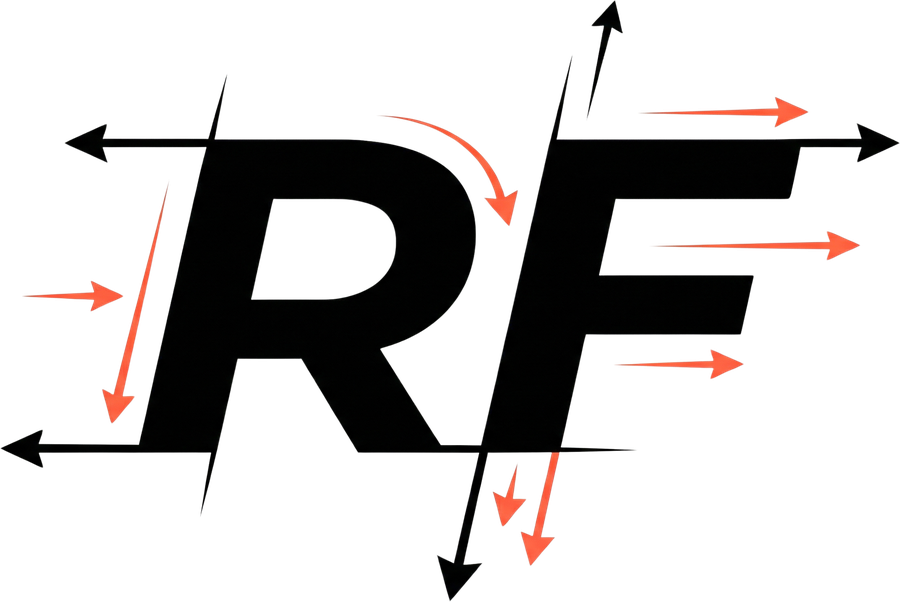

Dr. Raúl FerrerFisioterapia · Visión 360º
Reflexión · Valor profesional
¿Cuánto vale lo que sabes?
138,25 €brutos por paga
separan el salario base de un fisioterapeuta en clínicas privadas de Madrid del SMI anunciado para 2027.
@_raulferrerDesliza →
Dr. Raúl FerrerFisioterapia · Visión 360º
02
SMI 2027 frente a convenio 2026
La distancia.
1.286 €
1.424,25 €
138,25 €un 10,8 % más
que el mínimo
SMI 2027anunciado, 14 pagas
Fisioterapeutasalario base 2026,
sin antigüedad
Euros brutos por paga. Convenio de clínicas privadas de Madrid, anexo IV.
@_raulferrerDesliza →
Dr. Raúl FerrerFisioterapia · Visión 360º
03
Antes de sacar conclusiones
Lo que la cifra
no dice.
→
Años distintos
El SMI es de 2027 y la tabla de fisioterapia, de 2026. Falta saber qué pasará con el convenio el próximo año.
→
Solo salario base
No incluye los complementos que correspondan.
→
Una de dos tablas
El convenio tiene dos tablas salariales y esta es una de ellas.
→
SMI anunciado
Queda pendiente comprobar su publicación oficial.
Aun así, la cifra invita a detenerse.
@_raulferrerDesliza →
Dr. Raúl FerrerFisioterapia · Visión 360º
04
Sin quitarle nada a nadie
La pregunta
incómoda.
Reponer, limpiar o repartir son trabajos necesarios y exigentes, que merecen salarios dignos. Que el salario mínimo suba es una buena noticia.
“Entonces, ¿qué nos dice que el salario base de una profesión sanitaria titulada quede tan cerca de ese mínimo?
@_raulferrerDesliza →
Dr. Raúl FerrerFisioterapia · Visión 360º
05
Lo que aporta un fisioterapeuta
Lo que no se ve.
La sesión
Lo que se veLo que la sostiene
4 años de grado · 240 ECTS
Valorar y razonar clínicamente
Decidir y adaptar cada intervención
Responsabilidad cuando alguien recupera una actividad, convive con el dolor o vuelve a su vida cotidiana
En una clínica, ese conocimiento forma parte del valor del servicio que se ofrece.
@_raulferrerDesliza →
Dr. Raúl FerrerFisioterapia · Visión 360º
06
Lo que conviene recordar
El convenio es un suelo, no un techo.
Lo que se negocia
↑
Salario por encima de tablaComplementosFormación pagadaTiempo para valorar y coordinarRevisión anual pactada
Tabla del convenio 1.424,25 € · el mínimo obligatorio
SMI 2027 1.286 €
Esquema, no a escala
La tabla marca lo mínimo que debe pagarse, no lo máximo que puede pagarse. Y lo que no se pide, rara vez se ofrece.
@_raulferrerDesliza →
Dr. Raúl FerrerFisioterapia · Visión 360º
07
Tres pasos antes de firmar
Negociar es traducir.
01
Haz tu cuenta.
Compara lo que factura la clínica con tu agenda y lo que cuesta tu puesto.
sesiones al mes × precio por sesión = valor de tu agenda02
Pon nombre a lo invisible.
Valoraciones, coordinación, pacientes que continúan, programas que diseñas, formación que traes.
03
Pide algo concreto.
Una cifra, un complemento o unas horas de formación. Y por escrito.
La tabla se negocia entre sindicatos y patronal. Lo que se pide en cada clínica y lo que se pide en esa mesa suman.
@_raulferrerDesliza →

Dr. Raúl FerrerFisioterapia · Visión 360º
Si la fisioterapia aporta valor a las personas, a las clínicas y a la sociedad, ¿por qué cuesta tanto que se refleje en las condiciones de quienes la ejercen?
El salario no es la única medida del valor de una profesión. Pero sí dice algo sobre cómo decidimos reconocerla.
¿Has negociado alguna vez por encima de tabla? Cuéntalo en comentarios y guarda este post para tu próxima conversación salarial.
Fuentes
Convenio colectivo de clínicas privadas de la Comunidad de Madrid (establecimientos sanitarios de hospitalización, asistencia, consultas y laboratorios), anexo IV, tablas 2026 · Orden CIN/2135/2008, BOE, requisitos del título de Grado en Fisioterapia · SMI 2027: cifra anunciada el 17/11/2026, pendiente de publicación oficial.
@_raulferrerraulferrer.org